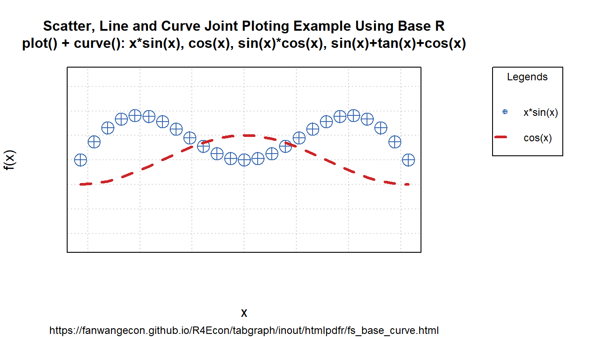
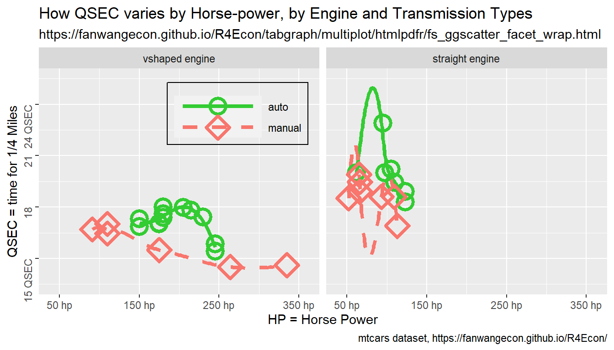

Chapter 10 Tables and Graphs
10.1 R Base Plots
10.1.1 Plot Curve, Line and Points
Go back to fan’s REconTools Package, R Code Examples Repository (bookdown site), or Intro Stats with R Repository (bookdown site).
Work with the R plot function.
10.1.1.1 One Point, One Line and Two Curves
- r curve on top of plot
- r plot specify pch lty both scatter and line
- r legend outside
Jointly plot:
- 1 scatter plot
- 1 line plot
- 2 function curve plots
#######################################################
# First, Some common Labels:
#######################################################
# Labeling
st_title <- paste0('Scatter, Line and Curve Joint Ploting Example Using Base R\n',
'plot() + curve(): x*sin(x), cos(x), sin(x)*cos(x), sin(x)+tan(x)+cos(x)')
st_subtitle <- paste0('https://fanwangecon.github.io/',
'R4Econ/tabgraph/inout/htmlpdfr/fs_base_curve.html')
st_x_label <- 'x'
st_y_label <- 'f(x)'
#######################################################
# Second, Generate the Graphs Functions and data points:
#######################################################
# x only used for Point 1 and Line 1
x <- seq(-1*pi, 1*pi, length.out=25)
# Line (Point) 1: Generate X and Y
y1 <- x*sin(x)
st_point_1_y_legend <- 'x*sin(x)'
# Line 2: Line Plot
y2 <- cos(x)
st_line_2_y_legend <- 'cos(x)'
# Line 3: Function
fc_sin_cos_diff <- function(x) sin(x)*cos(x)
st_line_3_y_legend <- 'sin(x)*cos(x)'
# Line 4: Function
fc_sin_cos_tan <- function(x) sin(x) + cos(x) + tan(x)
st_line_4_y_legend <- 'sin(x) + tan(x) + cos(x)'
#######################################################
# Third, set:
# - point shape and size: *pch* and *cex*
# - line type and width: *lty* and *lwd*
#######################################################
# http://www.sthda.com/english/wiki/r-plot-pch-symbols-the-different-point-shapes-available-in-r
# http://www.sthda.com/english/wiki/line-types-in-r-lty
# for colors, see: https://fanwangecon.github.io/M4Econ/graph/tools/fs_color.html
st_point_1_blue <- rgb(57/255,106/255,177/255)
st_line_2_red <- rgb(204/255, 37/255, 41/255,)
st_line_3_black <- 'black'
st_line_4_purple <- 'orange'
# point type
st_point_1_pch <- 10
# point size
st_point_1_cex <- 2
# line type
st_line_2_lty <- 'dashed'
st_line_3_lty <- 'dotted'
st_line_4_lty <- 'dotdash'
# line width
st_line_2_lwd <- 3
st_line_3_lwd <- 2.5
st_line_4_lwd <- 3.5
#######################################################
# Fourth: Share xlim and ylim
#######################################################
ar_xlim = c(min(x), max(x))
ar_ylim = c(-3.5, 3.5)
#######################################################
# Fifth: the legend will be long, will place it to the right of figure,
#######################################################
par(new=FALSE, mar=c(5, 4, 4, 10))
#######################################################
# Sixth, the four objects and do not print yet:
#######################################################
# pdf(NULL)
# Graph Scatter 1
plot(x, y1, type="p",
col = st_point_1_blue,
pch = st_point_1_pch, cex = st_point_1_cex,
xlim = ar_xlim, ylim = ar_ylim,
panel.first = grid(),
ylab = '', xlab = '', yaxt='n', xaxt='n', ann=FALSE)
pl_scatter_1 <- recordPlot()
# Graph Line 2
par(new=T)
plot(x, y2, type="l",
col = st_line_2_red,
lwd = st_line_2_lwd, lty = st_line_2_lty,
xlim = ar_xlim, ylim = ar_ylim,
ylab = '', xlab = '', yaxt='n', xaxt='n', ann=FALSE)
pl_12 <- recordPlot()
# Graph Curve 3
par(new=T)
curve(fc_sin_cos_diff,
col = st_line_3_black,
lwd = st_line_3_lwd, lty = st_line_3_lty,
from = ar_xlim[1], to = ar_xlim[2], ylim = ar_ylim,
ylab = '', xlab = '', yaxt='n', xaxt='n', ann=FALSE)
pl_123 <- recordPlot()
# Graph Curve 4
par(new=T)
curve(fc_sin_cos_tan,
col = st_line_4_purple,
lwd = st_line_4_lwd, lty = st_line_4_lty,
from = ar_xlim[1], to = ar_xlim[2], ylim = ar_ylim,
ylab = '', xlab = '', yaxt='n', xaxt='n', ann=FALSE)
pl_1234 <- recordPlot()
# invisible(dev.off())
#######################################################
# Seventh, Set Title and Legend and Plot Jointly
#######################################################
# CEX sizing Contorl Titling and Legend Sizes
fl_ces_fig_reg = 1
fl_ces_fig_small = 0.75
# R Legend
title(main = st_title, sub = st_subtitle, xlab = st_x_label, ylab = st_y_label,
cex.lab=fl_ces_fig_reg,
cex.main=fl_ces_fig_reg,
cex.sub=fl_ces_fig_small)
axis(1, cex.axis=fl_ces_fig_reg)
axis(2, cex.axis=fl_ces_fig_reg)
grid()
# Legend sizing CEX
legend("topright",
inset=c(-0.4,0),
xpd=TRUE,
c(st_point_1_y_legend, st_line_2_y_legend, st_line_3_y_legend, st_line_4_y_legend),
col = c(st_point_1_blue, st_line_2_red, st_line_3_black, st_line_4_purple),
pch = c(st_point_1_pch, NA, NA, NA),
cex = fl_ces_fig_small,
lty = c(NA, st_line_2_lty, st_line_3_lty, st_line_4_lty),
lwd = c(NA, st_line_2_lwd, st_line_3_lwd,st_line_4_lwd),
title = 'Legends',
y.intersp=2)
# record final plot
pl_1234_final <- recordPlot()We used recordplot() earlier. So now we can print just the first two constructed plots.
#######################################################
# Eighth, Plot just the first two saved lines
#######################################################
# mar: margin, bottom, left, top, right
pl_12
# R Legend
par(new=T)
title(main = st_title, sub = st_subtitle, xlab = st_x_label, ylab = st_y_label,
cex.lab = fl_ces_fig_reg,
cex.main = fl_ces_fig_reg,
cex.sub = fl_ces_fig_small)
# Legend sizing CEX
par(new=T)
legend("topright",
inset=c(-0.4,0),
xpd=TRUE,
c(st_point_1_y_legend, st_line_2_y_legend),
col = c(st_point_1_blue, st_line_2_red),
pch = c(st_point_1_pch, NA),
cex = fl_ces_fig_small,
lty = c(NA, st_line_2_lty),
lwd = c(NA, st_line_2_lwd),
title = 'Legends',
y.intersp=2)
10.3 ggplot Scatter Related Plots
10.3.1 ggplot Scatter Plot
Go back to fan’s REconTools Package, R Code Examples Repository (bookdown site), or Intro Stats with R Repository (bookdown site).
10.3.1.1 Three Continuous Variables and Two Categorical Variables
We will generate a graph that is very similar to the graph shown for fs_tib_factors, with the addition that scatter color and shape will be for two separate variables, and with the addition that scatter size will be for an additional continuous variable.
We have three continuous variables:
- y-axis: time for 1/4 Miles (QSEC)
- x-axis: horsepower
- scatter-size: miles per gallon (mpg)
We have two categorical ariables:
- color: vs engine shape (vshaped or straight)
- shape: am shift type (auto or manual)
First, Load in the mtcars dataset and convert to categorical variables to factor with labels.
# First make sure these are factors
tb_mtcars <- as_tibble(mtcars) %>%
mutate(vs = as_factor(vs), am = as_factor(am))
# Second Label the Factors
am_levels <- c(auto_shift = "0", manual_shift = "1")
vs_levels <- c(vshaped_engine = "0", straight_engine = "1")
tb_mtcars <- tb_mtcars %>%
mutate(vs = fct_recode(vs, !!!vs_levels),
am = fct_recode(am, !!!am_levels))Second, generate the core graph, a scatterplot with a nonlinear trendline. Note that in the example below color and shpae only apply to the jitter scatter, but not the trendline graph.
# Graphing
plt_mtcars_scatter <-
ggplot(tb_mtcars, aes(x=hp, y=qsec)) +
geom_jitter(aes(size=mpg, colour=vs, shape=am), width = 0.15) +
geom_smooth(span = 0.50, se=FALSE) +
theme_bw()Third, control Color and Shape Information. There will be two colors and two shapes. See all shape listing.
# Color controls
ar_st_colors <- c("#33cc33", "#F8766D")
ar_st_colors_label <- c("v-shaped", "straight")
fl_legend_color_symbol_size <- 5
st_leg_color_lab <- "Engine-Shape"
# Shape controls
ar_it_shapes <- c(9, 15)
ar_st_shapes_label <- c("auto", "manuel")
fl_legend_shape_symbol_size <- 5
st_leg_shape_lab <- "Transmission"Fourth, control the size of the scatter, which will be the MPG variable.
# Control scatter point size
fl_min_size <- 3
fl_max_size <- 6
ar_size_range <- c(fl_min_size, fl_max_size)
st_leg_size_lab <- "MPG"Fifth, control graph strings.
# Labeling
st_title <- paste0('Distribution of HP and QSEC from mtcars')
st_subtitle <- paste0('https://fanwangecon.github.io/',
'R4Econ/tabgraph/ggscatter/htmlpdfr/fs_ggscatter_3cts_mdisc.html')
st_caption <- paste0('mtcars dataset, ',
'https://fanwangecon.github.io/R4Econ/')
st_x_label <- 'HP = Horse Power'
st_y_label <- 'QSEC = time for 1/4 Miles'Sixth, combine graphical components.
# Add titles and labels
plt_mtcars_scatter <- plt_mtcars_scatter +
labs(title = st_title, subtitle = st_subtitle,
x = st_x_label, y = st_y_label, caption = st_caption)
# Color, shape and size controls
plt_mtcars_scatter <- plt_mtcars_scatter +
scale_colour_manual(values=ar_st_colors, labels=ar_st_colors_label) +
scale_shape_manual(values=ar_it_shapes, labels=ar_st_shapes_label) +
scale_size_continuous(range = ar_size_range)Eigth, replace default legends titles for color, shape and size.
# replace the default labels for each legend segment
plt_mtcars_scatter <- plt_mtcars_scatter +
labs(colour = st_leg_color_lab,
shape = st_leg_shape_lab,
size = st_leg_size_lab)Ninth, additional controls for the graph.
# Control the order of legend display
# Show color, show shape, then show size.
plt_mtcars_scatter <- plt_mtcars_scatter + guides(
colour = guide_legend(order = 1, override.aes = list(size = fl_legend_color_symbol_size)),
shape = guide_legend(order = 2, override.aes = list(size = fl_legend_shape_symbol_size)),
size = guide_legend(order = 3))
# show
print(plt_mtcars_scatter)
10.3.2 ggplot Multiple Scatter-Lines with Facet Wrap
Go back to fan’s REconTools Package, R Code Examples Repository (bookdown site), or Intro Stats with R Repository (bookdown site).
10.3.2.1 Multiple Scatter-Lines with Facet Wrap
Two subplots, for auto and manual transitions. The x-axis is horse-power, the y-axis shows QSEC. Different colors represent v-shaped and straight-engines.
- y-axis: time for 1/4 Miles (QSEC)
- x-axis: horsepower (hp)
- facet-wrap: auto or manual (am)
- colored line and point shapes: vshaped or straight engine (vs)
First, Load in the mtcars dataset and convert to categorical variables to factor with labels.
# First make sure these are factors
tb_mtcars <- as_tibble(mtcars) %>%
mutate(vs = as_factor(vs), am = as_factor(am))
# Second Label the Factors
am_levels <- c(auto_shift = "0", manual_shift = "1")
vs_levels <- c("vshaped engine" = "0", "straight engine" = "1")
tb_mtcars <- tb_mtcars %>%
mutate(vs = fct_recode(vs, !!!vs_levels),
am = fct_recode(am, !!!am_levels))Second, generate the core graph, a line plot and facet wrapping over the am variable. Note that vs variable has different color as well as line type and shape
# Graphing
plt_mtcars_scatter <-
ggplot(tb_mtcars, aes(x=hp, y=qsec,
colour=am, shape=am, linetype=am)) +
geom_smooth(se = FALSE, lwd = 1.5) + # Lwd = line width
geom_point(size = 5, stroke = 2) + # stroke = point shape width
facet_wrap(~ vs,
scales = "free_x",
nrow = 1, ncol = 2,
labeller = label_wrap_gen(multi_line=FALSE))Third, control Color, Shape and Line-type Information. There will be two colors, two shapes and two linetypes. See all shape listing and linetype listing., See all shape listing.
# Color controls
ar_st_colors <- c("#33cc33", "#F8766D")
ar_st_colors_label <- c("auto", "manual")
fl_legend_color_symbol_size <- 5
st_leg_color_lab <- "Transmission"
# Shape controls
ar_it_shapes <- c(1, 5)
ar_st_shapes_label <- c("auto", "manual")
fl_legend_shape_symbol_size <- 5
st_leg_shape_lab <- "Transmission"
# Line-Type controls
ar_st_linetypes <- c('solid', 'dashed')
ar_st_linetypes_label <- c("auto", "manual")
fl_legend_linetype_symbol_size <- 5
st_leg_linetype_lab <- "Transmission"Fourth, manaully specify an x-axis.
# x labeling and axis control
ar_st_x_labels <- c('50 hp', '150 hp', '250 hp', '350 hp')
ar_fl_x_breaks <- c(50, 150, 250, 350)
ar_fl_x_limits <- c(40, 360)
# y labeling and axis control
ar_st_y_labels <- c('15 QSEC', '18', '21', '24 QSEC')
ar_fl_y_breaks <- c(15, 18, 21, 24)
ar_fl_y_limits <- c(13.5, 25.5)Fifth, control graph strings.
# Labeling
st_title <- paste0('How QSEC varies by Horse-power, by Engine and Transmission Types')
st_subtitle <- paste0('https://fanwangecon.github.io/',
'R4Econ/tabgraph/multiplot/htmlpdfr/fs_ggscatter_facet_wrap.html')
st_caption <- paste0('mtcars dataset, ',
'https://fanwangecon.github.io/R4Econ/')
st_x_label <- 'HP = Horse Power'
st_y_label <- 'QSEC = time for 1/4 Miles'Sixth, combine graphical components.
# Add titles and labels
plt_mtcars_scatter <- plt_mtcars_scatter +
labs(title = st_title, subtitle = st_subtitle,
x = st_x_label, y = st_y_label, caption = st_caption)
# x and y-axis ticks controls
plt_mtcars_scatter <- plt_mtcars_scatter +
scale_x_continuous(labels = ar_st_x_labels,
breaks = ar_fl_x_breaks,
limits = ar_fl_x_limits) +
scale_y_continuous(labels = ar_st_y_labels,
breaks = ar_fl_y_breaks,
limits = ar_fl_y_limits)
# Color, shape and linetype controls
plt_mtcars_scatter <- plt_mtcars_scatter +
scale_colour_manual(values=ar_st_colors, labels=ar_st_colors_label) +
scale_shape_manual(values=ar_it_shapes, labels=ar_st_shapes_label) +
scale_linetype_manual(values=ar_st_linetypes, labels=ar_st_linetypes_label)Seventh, replace default legends, and set figure font overall etc.
# has legend theme
theme_custom <- theme(
text = element_text(size = 11),
axis.text.y = element_text(angle = 90),
legend.title = element_blank(),
legend.position = c(0.35, 0.80),
legend.key.width = unit(5, "line"),
legend.background =
element_rect(fill = "transparent", colour = "black", linetype='solid'))
# no legend theme (no y)
theme_custom_blank <- theme(
text = element_text(size = 12),
legend.title = element_blank(),
legend.position = "none",
axis.title.y=element_blank(),
axis.text.y=element_blank(),
axis.ticks.y=element_blank())Eighth, graph out.
# replace the default labels for each legend segment
plt_mtcars_scatter <- plt_mtcars_scatter + theme_custom
# show
print(plt_mtcars_scatter)
10.3.2.2 Divide Facet Wrapped Plot into Subplots
Given the facet-wrapped plot just generated, now save alternative plot versions, where each subplot is saved by itself. Will simply use the code from above, but call inside lapply over different am categories.
Below generate a matrix with multiple data columns, then use apply over each row of the matrix and select different columns of values for each subplot generation.
First generate with legend versions, then without legend versions. These are versions that would be used to more freely compose graph together.
for (it_subplot_as_own_vsr in c(1,2)) {
if (it_subplot_as_own_vsr == 1) {
theme_custom_use <- theme_custom
# st_file_suffix <- '_haslegend'
# it_width <- 100
} else if (it_subplot_as_own_vsr == 2) {
theme_custom_use <- theme_custom_blank
# st_file_suffix <- '_nolegend'
# it_width <- 88
}
# unique vs as matrix
# ar_uniques <-sort(unique(tb_mtcars$vs))
# mt_unique_vs <- matrix(data=ar_uniques, nrow=length(ar_uniques), ncol=1)
mt_unique_vs <- tb_mtcars %>% group_by(vs) %>%
summarize(mpg=mean(mpg)) %>% ungroup()
# apply over
ls_plots <- apply(mt_unique_vs, 1, function(ar_vs_cate_row) {
# 1. Graph main
plt_mtcars_scatter <-
ggplot(tb_mtcars %>% filter(vs == ar_vs_cate_row[1]),
aes(x=hp, y=qsec,
colour=am, shape=am, linetype=am)) +
geom_smooth(se = FALSE, lwd = 1.5) + # Lwd = line width
geom_point(size = 5, stroke = 2)
# 2. Add titles and labels
plt_mtcars_scatter <- plt_mtcars_scatter +
labs(title = st_title, subtitle = st_subtitle,
x = st_x_label, y = st_y_label, caption = st_caption)
# 3. x and y ticks
plt_mtcars_scatter <- plt_mtcars_scatter +
scale_x_continuous(labels = ar_st_x_labels, breaks = ar_fl_x_breaks, limits = ar_fl_x_limits) +
scale_y_continuous(labels = ar_st_y_labels, breaks = ar_fl_y_breaks, limits = ar_fl_y_limits)
# 4. Color, shape and linetype controls
plt_mtcars_scatter <- plt_mtcars_scatter +
scale_colour_manual(values=ar_st_colors, labels=ar_st_colors_label) +
scale_shape_manual(values=ar_it_shapes, labels=ar_st_shapes_label) +
scale_linetype_manual(values=ar_st_linetypes, labels=ar_st_linetypes_label)
# 5. replace the default labels for each legend segment
plt_mtcars_scatter <- plt_mtcars_scatter + theme_custom_use
})
# show
print(ls_plots)
}## [[1]]
##
## [[2]]##
## [[1]]
##
## [[2]]
10.4 Write and Read Plots
10.4.1 Import and Export Images
Go back to fan’s REconTools Package, R Code Examples Repository (bookdown site), or Intro Stats with R Repository (bookdown site).
Work with the R plot function.
10.4.1.1 Export Images Different Formats with Plot()
10.4.1.1.1 Generate and Record A Plot
Generate a graph and recordPlot() it. The generated graph does not have legends Yet. Crucially, there are no titles, legends, axis, labels in the figures. As we stack the figures together, do not add those. Only add at the end jointly for all figure elements together to control at one spot things.
#######################################################
# First, Strings
#######################################################
# Labeling
st_title <- paste0('Scatter, Line and Curve Joint Ploting Example Using Base R\n',
'plot() + curve():sin(x)*cos(x), sin(x)+tan(x)+cos(x)')
st_subtitle <- paste0('https://fanwangecon.github.io/',
'R4Econ/tabgraph/inout/htmlpdfr/fs_base_curve.html')
st_x_label <- 'x'
st_y_label <- 'f(x)'
#######################################################
# Second, functions
#######################################################
fc_sin_cos_diff <- function(x) sin(x)*cos(x)
st_line_3_y_legend <- 'sin(x)*cos(x)'
fc_sin_cos_tan <- function(x) sin(x) + cos(x) + tan(x)
st_line_4_y_legend <- 'sin(x) + tan(x) + cos(x)'
#######################################################
# Third, patterns
#######################################################
st_line_3_black <- 'black'
st_line_4_purple <- 'orange'
# line type
st_line_3_lty <- 'dotted'
st_line_4_lty <- 'dotdash'
# line width
st_line_3_lwd <- 2.5
st_line_4_lwd <- 3.5
#######################################################
# Fourth: Share xlim and ylim
#######################################################
ar_xlim = c(-3, 3)
ar_ylim = c(-3.5, 3.5)
#######################################################
# Fifth: Even margins
#######################################################
par(new=FALSE)
#######################################################
# Sixth, the four objects and do not print yet:
#######################################################
# Graph Curve 3
par(new=T)
curve(fc_sin_cos_diff,
col = st_line_3_black,
lwd = st_line_3_lwd, lty = st_line_3_lty,
from = ar_xlim[1], to = ar_xlim[2], ylim = ar_ylim,
ylab = '', xlab = '', yaxt='n', xaxt='n', ann=FALSE)
# Graph Curve 4
par(new=T)
curve(fc_sin_cos_tan,
col = st_line_4_purple,
lwd = st_line_4_lwd, lty = st_line_4_lty,
from = ar_xlim[1], to = ar_xlim[2], ylim = ar_ylim,
ylab = '', xlab = '', yaxt='n', xaxt='n', ann=FALSE)pl_curves_save <- recordPlot()10.4.1.1.2 Generate Large Font and Small Font Versions of PLot
Generate larger font version:
# Replay
pl_curves_save
#######################################################
# Seventh, Set Title and Legend and Plot Jointly
#######################################################
# CEX sizing Contorl Titling and Legend Sizes
fl_ces_fig_reg = 0.75
fl_ces_fig_leg = 0.75
fl_ces_fig_small = 0.65
# R Legend
title(main = st_title, sub = st_subtitle, xlab = st_x_label, ylab = st_y_label,
cex.lab=fl_ces_fig_reg,
cex.main=fl_ces_fig_reg,
cex.sub=fl_ces_fig_small)
axis(1, cex.axis=fl_ces_fig_reg)
axis(2, cex.axis=fl_ces_fig_reg)
grid()
# Legend sizing CEX
legend("topleft",
bg="transparent",
bty = "n",
c(st_line_3_y_legend, st_line_4_y_legend),
col = c(st_line_3_black, st_line_4_purple),
pch = c(NA, NA),
cex = fl_ces_fig_leg,
lty = c(st_line_3_lty, st_line_4_lty),
lwd = c(st_line_3_lwd,st_line_4_lwd),
y.intersp=2)# record final plot
pl_curves_large <- recordPlot()
dev.off()Generate smaller font version:
# Replay
pl_curves_save
#######################################################
# Seventh, Set Title and Legend and Plot Jointly
#######################################################
# CEX sizing Contorl Titling and Legend Sizes
fl_ces_fig_reg = 0.45
fl_ces_fig_leg = 0.45
fl_ces_fig_small = 0.25
# R Legend
title(main = st_title, sub = st_subtitle, xlab = st_x_label, ylab = st_y_label,
cex.lab=fl_ces_fig_reg,
cex.main=fl_ces_fig_reg,
cex.sub=fl_ces_fig_small)
axis(1, cex.axis=fl_ces_fig_reg)
axis(2, cex.axis=fl_ces_fig_reg)
grid()
# Legend sizing CEX
legend("topleft",
bg="transparent",
bty = "n",
c(st_line_3_y_legend, st_line_4_y_legend),
col = c(st_line_3_black, st_line_4_purple),
pch = c(NA, NA),
cex = fl_ces_fig_leg,
lty = c(st_line_3_lty, st_line_4_lty),
lwd = c(st_line_3_lwd,st_line_4_lwd),
y.intersp=2)# record final plot
pl_curves_small <- recordPlot()
dev.off()10.4.1.1.3 Save Plot with Varying Resolutions and Heights
Export recorded plot.
A4 paper is 8.3 x 11.7, with 1 inch margins, the remaining area is 6.3 x 9.7. For figures that should take half of the page, the height should be 4.8 inch. One third of a page should be 3.2 inch. 6.3 inch is 160mm and 3 inch is 76 mm. In the example below, use
# Store both in within folder directory and root image directory:
# C:\Users\fan\R4Econ\tabgraph\inout\_img
# C:\Users\fan\R4Econ\_img
# need to store in both because bookdown and indi pdf path differ.
# Wrap in try because will not work underbookdown, but images already created
ls_spt_root <- c('..//..//', '')
spt_prefix <- '_img/fs_img_io_2curve'
for (spt_root in ls_spt_root) {
# Changing pointsize will not change font sizes inside, just rescale
# PNG 72
try(png(paste0(spt_root, spt_prefix, "_w135h76_res72.png"),
width = 135 , height = 76, units='mm', res = 72, pointsize=7))
print(pl_curves_large)
dev.off()
# PNG 300
try(png(paste0(spt_root, spt_prefix, "_w135h76_res300.png"),
width = 135, height = 76, units='mm', res = 300, pointsize=7))
print(pl_curves_large)
dev.off()
# PNG 300, SMALL, POINT SIZE LOWER
try(png(paste0(spt_root, spt_prefix, "_w80h48_res300.png"),
width = 80, height = 48, units='mm', res = 300, pointsize=7))
print(pl_curves_small)
dev.off()
# PNG 300
try(png(paste0(spt_root, spt_prefix, "_w160h100_res300.png"),
width = 160, height = 100, units='mm', res = 300))
print(pl_curves_large)
dev.off()
# EPS
setEPS()
try(postscript(paste0(spt_root, spt_prefix, "_fs_2curve.eps")))
print(pl_curves_large)
dev.off()
}## Error in png(paste0(spt_root, spt_prefix, "_w135h76_res72.png"), width = 135, :
## unable to start png() device
## Error in png(paste0(spt_root, spt_prefix, "_w135h76_res300.png"), width = 135, :
## unable to start png() device
## Error in png(paste0(spt_root, spt_prefix, "_w80h48_res300.png"), width = 80, :
## unable to start png() device
## Error in png(paste0(spt_root, spt_prefix, "_w160h100_res300.png"), width = 160, :
## unable to start png() device
## Error in postscript(paste0(spt_root, spt_prefix, "_fs_2curve.eps")) :
## cannot open file '..//..//_img/fs_img_io_2curve_fs_2curve.eps'10.4.1.1.4 Low and High Resolution Figure
The standard resolution often produces very low quality images. Resolution should be increased. See figure comparison.


10.4.1.1.5 Smaller and Larger Figures
Smaller and larger figures with different font size comparison. Note that earlier, we generated the figure without legends, labels, etc first, recorded the figure. Then we associated the same underlying figure with differently sized titles, legends, axis, labels.